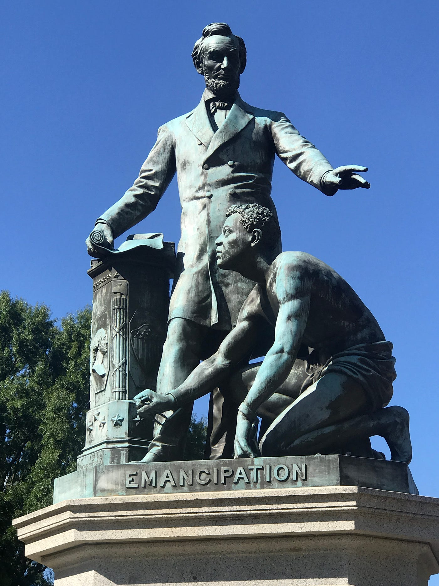

What should be done about
controversial monuments?
How should we determine whether a controversial monument is worth removing or maintaining?
How does this precedent affect how we view vandalism in the arts?
Case Studies
Equestrian Statue of Leopold II
An equestrian statue of King Leopold II located in Brussels, Belgium. This monument has been the subject of controversy due to Leopold's role in the exploitation of the Congo Free State. Some view it as national Belgian pride, others see it as a symbol of colonial oppression.
Explore case
Auschwitz Concentration Camp
A former concentration camp where millions of people (primarily Jews) were imprisoned and killed during World War II. The camp has been preserved as a museum and memorial to the victims of the Holocaust, but it has also been criticized for its commercialization.
Explore case
Lincoln Emancipation Memorial
A monument dedicated to Abraham Lincoln located in Washington, D.C. It honors Lincoln's role in the emancipation of enslaved people in the United States. However, it has been heavily criticized for its portrayal of African Americans, particularly in the way it depicts their role in the abolition of slavery.
Explore case